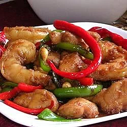

Kung Pao Chicken

Description
Kung Pao Chicken is a highly addictive stir-fried chicken with the perfect combination of salty, sweet and spicy flavour!
Ingredients:
4 skinless, boneless chicken breast halves - cut into 1 inch cubes
- 4 skinless, boneless chicken breast halves - cut into 1 inch cubes
- 20 peeled and deveined large shrimp (21 to 30 per pound)
- 4 teaspoons soy sauce
- 4 teaspoons rice wine
- 2 teaspoons sesame oil (Optional)
- 1 tablespoon cornstarch
- ½ cup vegetable oil, divided
- 4 cloves garlic, minced
- 16 dried red chile peppers, cut in half
- 2 teaspoons Szechuan peppercorns (Optional)
- 1 red bell pepper, sliced
- 1 green bell pepper, sliced
- ¼ cup dark soy sauce
- 2 tablespoons rice wine
- 2 teaspoons white sugar
- 1 cup salted peanuts
- 4 green onions, cut into 3 inch lengths
- 2 dashes sesame oil, or to taste (Optional)
Steps:
- Combine chicken and shrimp in a mixing bowl along with 4 teaspoons soy sauce, 4 teaspoons rice wine, and 2 teaspoons sesame oil.
Sprinkle with cornstarch, and mix until evenly combined. Set aside to marinate for 25 minutes.
- Heat half of the vegetable oil in a wok over high heat.
Stir in chicken mixture, and cook until chicken has turned white on the outside and is still a bit pink in the center, about 5 minutes.
Remove chicken mixture and wipe the wok clean.
- Heat remaining vegetable oil over high heat. Stir in garlic, and cook for a few seconds until garlic begins to turn brown.
Stir in dried chiles and Szechwan peppercorns; cook and stir a few seconds until peppers begin to darken.
Add red and green bell peppers, dark soy sauce, 2 tablespoons rice wine, and sugar. Bring to a boil and stir in chicken mixture.
Cook until peppers are nearly tender and chicken is no longer pink in the center, about 5 minutes more.
Stir in peanuts and green onion until green onion becomes limp. Stir in a few drops of sesame oil to serve.
Go Home